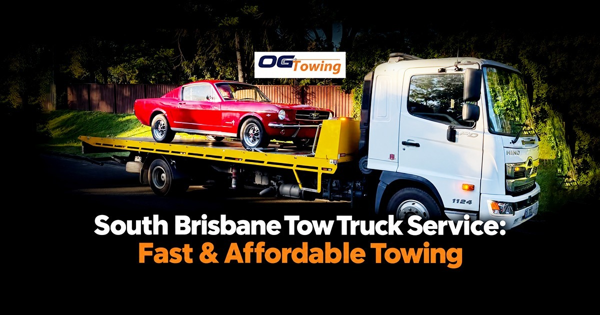

A vehicle breakdown, accident, flat tyre or mechanical problem can happen without warning. When your vehicle cannot be driven safely, finding a dependable South Brisbane tow truck service can help you get back on the road or transport your vehicle to a suitable destination.
OG Towing provides 24/7 towing services in South Brisbane and surrounding Brisbane areas, including emergency towing, breakdown recovery, accident towing and vehicle transport.
24/7 Tow Truck Service in South Brisbane
Vehicle problems can happen at any time, whether you are travelling to work, returning home or driving through South Brisbane. A reliable tow truck can provide assistance when your vehicle is no longer safe or practical to drive.
OG Towing offers a range of towing services, including:
- 24/7 emergency towing
- Breakdown recovery
- Accident towing
- Car towing
- Vehicle transport
- Insurance towing
- Local towing
- Long-distance vehicle transport
For Brisbane-wide towing assistance, visit our Tow Truck Brisbane service.
Fast Emergency Towing in South Brisbane
A breakdown can leave you stranded and disrupt your day. Common reasons for requesting a tow truck include engine problems, overheating, flat tyres, battery issues, accident damage and vehicles that will not start.
When requesting emergency towing, provide your exact location, vehicle type and destination. This helps the towing operator understand the job requirements.
OG Towing provides 24/7 emergency towing in South Brisbane, helping customers transport vehicles to mechanics, homes, dealerships and other suitable destinations.
Affordable Car Towing in South Brisbane
When you need towing, the cost can depend on several factors, including the distance, vehicle type, location, time of service and towing requirements.
OG Towing aims to provide practical and affordable towing solutions for motorists in South Brisbane and surrounding areas. Contact the towing team with your location and vehicle details to discuss your requirements.
Accident Towing in South Brisbane
Following an accident, a vehicle may be damaged and unsafe to drive. Attempting to drive a damaged vehicle can create additional risks.
OG Towing provides accident towing and vehicle recovery in South Brisbane, helping move damaged vehicles from the roadside to a suitable location.
For insurance-related towing, you can also visit our Insurance Towing service.
Towing Services Near South Brisbane
South Brisbane is close to several major Brisbane suburbs and transport routes. OG Towing provides towing assistance across Brisbane and surrounding areas.
Depending on your location, towing assistance may be available in areas such as:
- South Brisbane
- Brisbane CBD
- Woolloongabba
- West End
- Highgate Hill
- Kangaroo Point
- Coopers Plains
- Capalaba
- Logan
- Surrounding Brisbane suburbs
You can also explore our Coopers Plains towing service if your vehicle is located in that area.
What To Do When Your Vehicle Breaks Down
If your car breaks down in South Brisbane, prioritise your safety.
Move somewhere safe: If possible, move the vehicle away from moving traffic.
Use hazard lights: Make your vehicle more visible to approaching motorists.
Avoid unsafe roadside repairs: Do not attempt repairs if you are in a dangerous location.
Contact a tow truck: Give the operator your exact location and vehicle details.
Arrange your destination: Tell the towing provider whether you need the vehicle taken to a mechanic, home, dealership or another location.
For Queensland road-safety information, motorists can refer to the Queensland Government road safety resources.
Why Choose OG Towing?
Choosing the right towing service can make a stressful roadside situation easier to manage. OG Towing provides:
24/7 Availability: Emergency towing assistance is available day and night.
Local Brisbane Coverage: Service is available across South Brisbane and surrounding areas.
Breakdown Recovery: Assistance for vehicles that cannot continue their journey.
Accident Towing: Vehicle recovery following collisions and other incidents.
Vehicle Transport: Transport to mechanics, homes, dealerships and other suitable destinations.
Book a South Brisbane Tow Truck
If you need a South Brisbane tow truck, OG Towing provides 24/7 towing, breakdown recovery, accident towing and vehicle transport across Brisbane.
Whether your vehicle has broken down, been involved in an accident or simply needs to be transported, contact OG Towing for professional towing assistance.
FAQs
Yes. OG Towing provides 24/7 towing assistance in South Brisbane for breakdowns, accidents and vehicle transport.
The cost depends on factors such as your location, vehicle type, towing distance and service required. Contact OG Towing for a quote based on your specific requirements.
Yes. OG Towing provides breakdown towing for vehicles that cannot safely continue driving.
Yes. OG Towing can assist with accident recovery and transport damaged vehicles to a suitable destination.
Yes. Your vehicle can be transported to a mechanic, home, dealership or another suitable destination depending on your requirements.